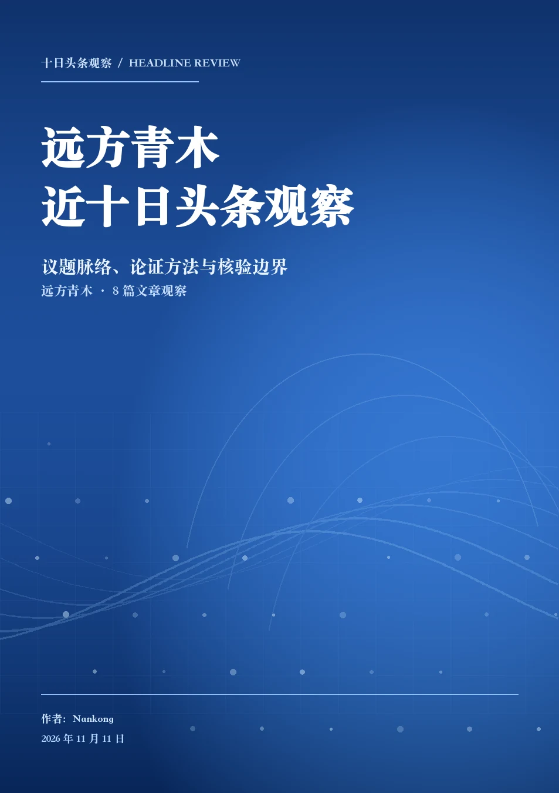

下载、解压，进入 Skill 文件夹
下载 v0.6.1 完整 ZIP，解压得到 wechat-article-to-md-skill 文件夹，在这个文件夹中打开终端。
已有 Node.js 18+ 会直接复用；缺少时，启动器会从 Node.js 官方下载并校验运行环境，安装到用户私有目录。转换依赖已打包，不需要运行 npm install。
一次真实归档 · 2026 年 11 月 11 日
以 Best in Class 为例：从公开目录找到微信原文，保存 10 篇 Markdown，再按正文整理成 4 个分类。
免费公开来源 · 无需登录微信 · 无需 API Key
使用教程
下面的命令使用免费路径，不会调用付费接口，也不会自动切换到付费服务。
下载 v0.6.1 完整 ZIP，解压得到 wechat-article-to-md-skill 文件夹，在这个文件夹中打开终端。
已有 Node.js 18+ 会直接复用；缺少时，启动器会从 Node.js 官方下载并校验运行环境，安装到用户私有目录。转换依赖已打包，不需要运行 npm install。
本例使用 Best in Class。--trial 10 只限定这次试跑，不是 Skill 的篇数上限。医药规则文件会把文章进一步分到临床、商业、财报与 AI 等主题。
sh scripts/run.sh --archive --name 'Best in Class' --trial 10 --rules references/medicine-rules.json --output-dir './Best-in-Class-10'下载范围可以按篇数（--trial N）、天数（--days 10，含今天共 10 个自然日）或起止日期（--since 2026-10-31 --until 2026-11-09）限定，三种可组合。日期要求在创建目录前校验，落在窗口外的原文不会下载，判定依据写入 archive.json 的 date_window 与 date_filter。
每篇请求串行执行，上一篇结束后至少间隔 60 秒。遇验证码、访问受限或账号不匹配会停止，并保留已完成的文件和续接清单。
archive.json本次阶段、数量、停止原因discovery/公开来源与核验后的原文链接articles/逐篇 Markdown、状态与哈希classified/INDEX.md按主题浏览文章classified/catalog.json多标签、命中词与正文证据分类先核验来源、账号和文件哈希，再根据正文关键词判断。分类副本保持原文内容不变；规则结果可以继续由智能体读正文复核。
图片保留远程 URL，本次结果不是离线图片归档。10 篇完整正文保留在本机，本网站提供整理目录、核验元数据及据此形成的研究报告。
将解压后的文件夹放入智能体的技能目录。Codex 的位置是 macOS / Linux 的 ~/.codex/skills/ 或 Windows 的 %USERPROFILE%\.codex\skills\，确认 SKILL.md 位于技能文件夹中，再重新打开会话。
使用 $wechat-article-to-md-skill，免费整理 Best in Class 的 10 篇文章，保存为 Markdown，并按正文归类。
已有微信文章链接也可以单篇转换。换公众号时，先检查免费公开目录是否收录；没有收录时会报告缺口，不会用其他公众号凑数。
真实案例目录
本例选取免费公开目录的前 10 条，并逐一读取微信原文。顺序来自公开索引，不代表已核验公众号最新 10 篇。
点击标题展开核验信息。显示日期来自 ByDrug 列表 / 详情页，未作为微信原文发布时间元数据的独立核验。字节数与 SHA256 对应本次生成的 Markdown。
两个真实案例
保存与核验之后，继续阅读正文，提炼可以交叉比较的问题；两例都保留核验边界，不公开公众号原文全文。
Best in Class · 十篇文章观察
临床证据、商业可及性与研发效率
报告依据本案例的 10 篇公众号文章，从临床研究、GLP-1 商业竞争及 AI 药物发现三个方向展开，保留不同研究阶段、分析人群与结论的适用范围。
附录提供十篇公众号原文的标题、链接与二维码，扫码即可查看原文，方便逐篇核对。研究结论限于本次样本。

远方青木 · 近十日头条观察
议题脉络、论证方法与核验边界
第二个案例不依赖公开作者目录：先交叉核验微信原文页、署名镜像与授权转载号，确认 2026-11-01 至 11-10 的 8 篇头条；再把其中 6 篇原号全文串行归档为 Markdown，最终形成 68 页 A4 标准蓝画册（含原文附录与配图）。
本册为 68 页完整版，含 6 篇公众号原文全文（391 段）与 34 张按原位置插入的原文配图。原文及配图著作权归原作者与原发布账号所有，仅供个人非商业查阅、核验与研究，不得转载、摘编或用于商业用途；研究结论限于本次样本。
知道范围，才能复用
本次免费来源是 ByDrug 的公开作者目录。目录显示收录 62 条，但该网站未登录时仅开放前 3 页；Skill 遵守这个限制，不请求第 4 页。
Skill 没有固定文章篇数上限；免费来源的收录范围和页面权限决定当前可取得的内容。10 篇成功不等于全部历史已经完整，也不意味着任意公众号都能使用这一来源。
默认免费流程不要求微信登录或 API Key，不会自动调用 DataXAPI。付费接口仍为显式可选配置，详见源仓库的 完整归档说明。